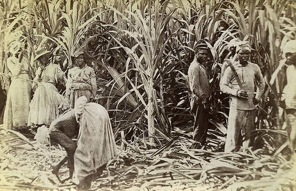

Asked by: Shauntel Taylor
Nov 27, 2019
I believe that our history plays a important part in the way the caribbean countries and their people interact with each other today. In this modern era I believe each caribbean country history has contibuted to their current culture practices, economic status, even the way people view each other the mistrust and intolerence between all the caribbean people what are you thoughts and opinions about this topic ?
I know for the caribbean country Haiti their history have definitely affected their current economic status today. Take a look at their history, there was once a time when Haiti was the one of the richest caribbean countries, many centuries ago. Haiti was first discovered by the spanish in 1492 when Christopher Columbus discovered the new world which would be dubbed the caribbean today. It wasn't until the 1600's when the french finally took over Haiti. Haiti became one of French's most successful countries exporting more sugar, flour, coffee etc than any other caribbean country at that time. However all this wealth was meaningless to the slaves whose blood, tears and sweat were spilt making it. These circumstances and more led to the famous French revolution in which the african slaves rebelled against their french masters. This resulted in Haiti being the first caribbean country liberated from french colonial powers. Becoming the first black republic in the caribbean. However I believe this was probably the worst thing that could happen to Haiti.
45
@Brittanie Brown you have to explain that one for me how does Haiti gaining independence first affect their economic status and how that relates to mistrust and intolerence seen in today society.
5
Well @Ayodeji Adedipe Haiti gained independence from France in 1804 this was before any other caribbean countires, as such when Haiti
first gained their independence countries such as Jamaica and Trinidad & Tobago were still under European powers rule. As such at the time
no country in the caribbean or in the EU wanted to do trade with Haiti. Back then no one wanted to do business with a country owned by slaves
or by black men and women, thus with no profit coming into the country Haiti economy went downhill, even today more than a
century later their is still mistrust between Haiti and other caribbean countries as trade between Haiti and others have little
improvement. Jamaica and other countries still aren't willing to do business with Haiti even after being freed from the European powers,
It wasn't until 2003 trade agreements between Haiti and other caribbean countries have opened up. Allowing Haiti access to the regional
market. Here is a link to more information for you to read should you want to find out more.
https://caricom.org/media-center/communications/press-releases/haitian-trade-officials-on-caricom-study-tour
30
I agree with @Brittanie Brown just like our white master didn't want to buy or sell goods with Haiti it took our government more than a century to trust our fellow caribbean nation to start trading with them even now we scoff and Haitians and want nothing to do with them despite that at one time during slavery they were the jewel of the caribbean and possibly the wealthiest and now fast foward many years they are nothing more than a poverty stricken country.
0
In today's society can see evidence of intolerance towards the language that we naturally speak which is Patois and I beleive this is as a result of our history and our identity as a nation. Our history Jamaica's history has played a key part in why most people today in Jamaica don't want to accept Patois as Jamaica's official language.
50
@Twannakay Dennis I don't really agree with your statement English is Jamaica's native language and not Patois. History has nothing to do with it.
1
Yes it does, Jamaica speaks English because it was once a british colony when the slaves were brought from Africa they had their own
language that they speak but the british forced their own language on them. Since Aug 6th 1962 we have gained independence from England
but yet still we cling to their language and and have become gravely intolerant of our own language which is a mix of African language
and English we today we call it Patois. Patois is our culture that we Jamaicans should embrace in today's society speaking Patois is
forwned upon today it is considered impolite or not satisfactory or by some atrocious just as our slave master thought that the slaves
African traditions were atrocious. Remember our ancestors fought and died for our right to be free and express ourselves how we want
yet we hold intolerance towards Patois and acceptance towards English which belongs to our once then slave masters. Here is a article
which futher cements my point made.
https://www.studycountry.com/guide/JM-language.htm
60
I would like to contribute to this topic of conversation as it regards to intolerance CCJ vs the privy Council. So we all know like @Twannakay Dennis said Jamaica and other caribbean countries were once English colonies. As such even during slavery times when they were any disputes it was left to our slave master to resolve the issue this has been the case throughout history even now. The privy council is Jamaica's final court of appeal meaning that the queen of England our once slave master will be the one to decide our fate should it be necessary as a last result but yet we claim to be free and independent. how can we be soo blind it goes without a doubt that the CCJ should be our final court of appeal let caribbean people decide the fate of caribbean people not our white slave masters.
15
On the topic of intolerance I agree with @Kendra Banton comment 100% the people in Jamaica have a unwillingness to let go of colonial powers influence and remain prejudice against authority. When a fellow black man tells us to do something we fight their authority naturally we rebelled against our fellow brother but when a white man tells us to do something we keel over and do it right away. I feel this stems from slavery when the white masters to be the onces to tell us what to do and pass judgement on us but when our fellow brother decided to revolt against their white master there were those slaves who sided with their master instead of their own some even betray their own. Currently we are making efforts to make the CCJ the final court of appeal but there are those who just like the slaves chose to remain by their master sides we have people who choose to stick with the privy council those people who are unwilling to accept the view that we should thoughly be free from colonial powers.
3
I did some research on @4553 discussion about the CCJ vs the Privy council and found these readings.
https://today.caricom.org/2018/07/12/opinion-caribbean-court-of-justice-vs-the-privy-council/
http://digjamaica.com/m/blog/privy-council-vs-ccj-arguments-for-against-both-as-jamaicas-final-court-of-appeal/
Based on these articles I can agree that the Jamaican people are intolerant to the lagal aspects and both benefits and reprocussions that would happen should the CCj
be the final court of appeal the greatest obstacle for that to happen based on what i read would be the lack of political independence as having the CCJ be the final
court of appeal opens it up to bias, favourtism and nepotism.
10
Related Topics
Should Patois be considered Jamaica's official language ?
All caribbean countries should receive monetary compensation for slavery
